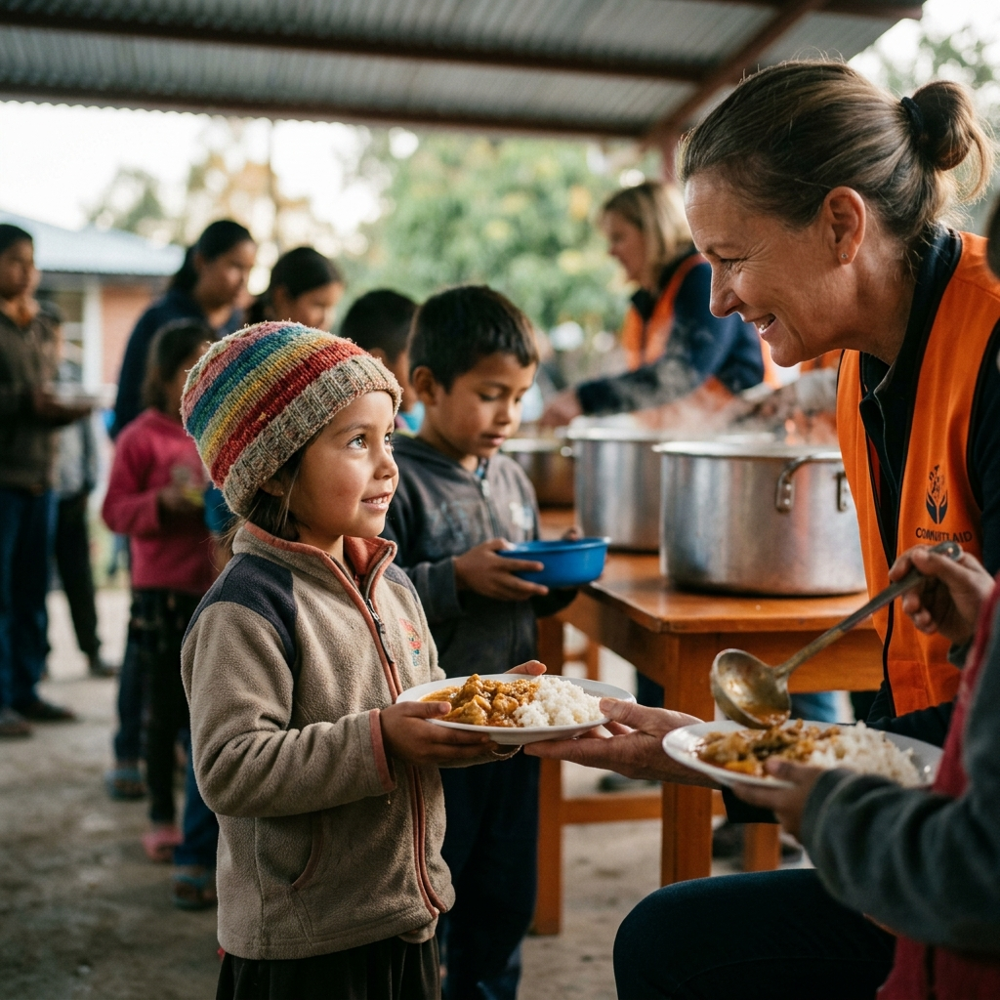

Save Food, Save Lives
Join Lacso Today
How It Works
Join our community in three simple steps
Step 1: Register
Create your account and join our community.
Step 2: Donate/Volunteer
Share food or give your time to help others.
Step 3: Track Impact
See the difference you make in real time.
About Lacso
Lacso connects food donors with those in need.
Restaurants, stores, and individuals can donate surplus food to communities.

Join Us!